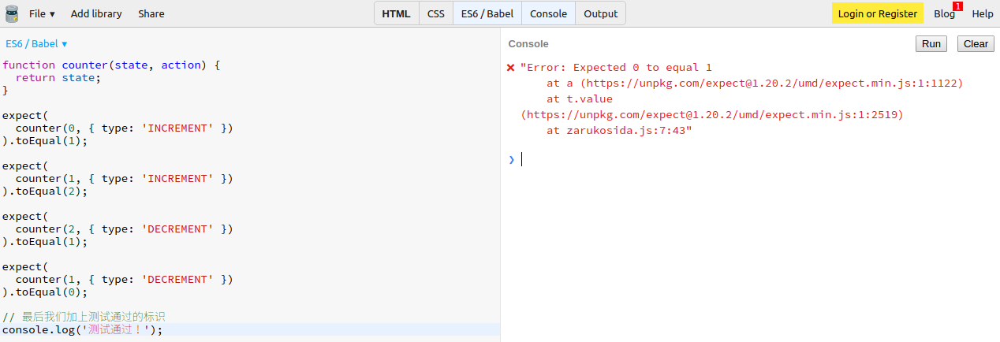
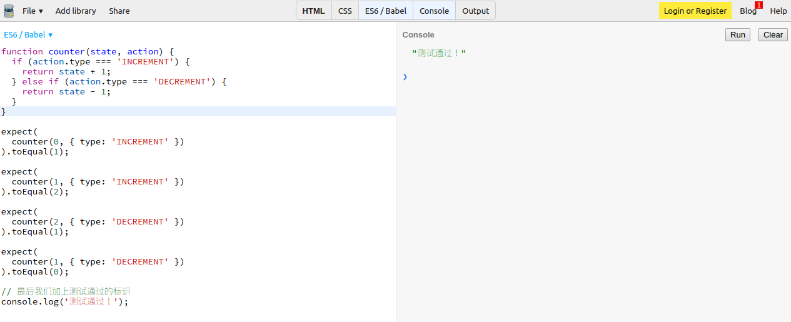
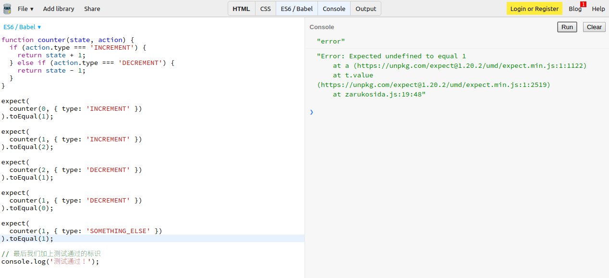
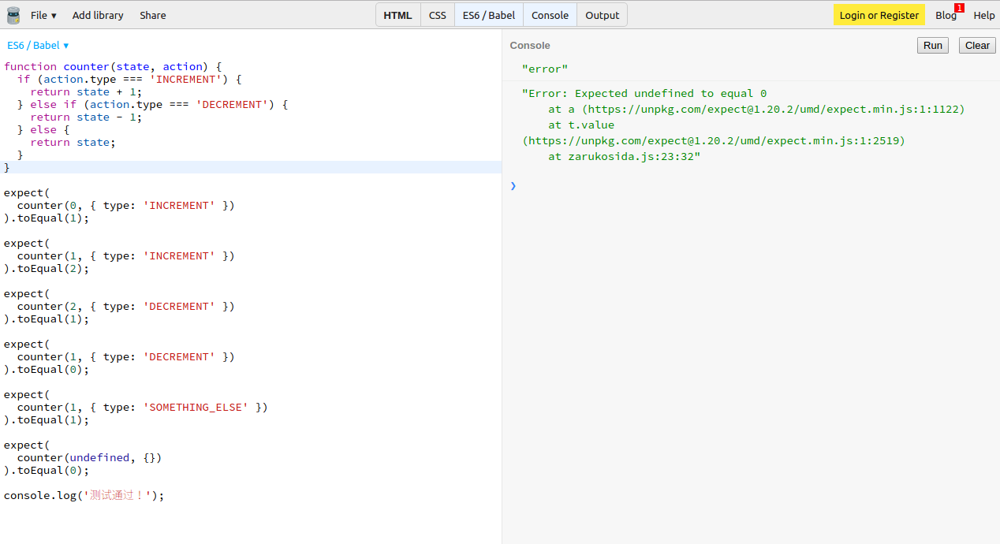

本节使用到的环境：https://jsbin.com/yefimay/edit?js,console
为计数器编写简单的 reducer 函数
function counter(state, action) {
return state;
}现在我们先不实现里面的功能。因为我们要用到测试驱动的开发方式。
测试驱动的开发
所谓测试驱动的开发就是你先写好测试，规定了函数的功能和预期效果，然后再去编写逻辑代码实现对应功能。
这里我们要使用的是 Expect 库，语法十分简单：
// 我们期待当这个函数接受当前状态为 0 和一个 'INCREMENT' 动作之后，它会返回 1.
expect(
counter(0, { type: 'INCREMENT' })
).toEqual(1);现在让我们编写一些测试用例来规定 reducer 的行为：
function counter(state, action) {
return state;
}
expect(
counter(0, { type: 'INCREMENT' })
).toEqual(1);
expect(
counter(1, { type: 'INCREMENT' })
).toEqual(2);
expect(
counter(2, { type: 'DECREMENT' })
).toEqual(1);
expect(
counter(1, { type: 'DECREMENT' })
).toEqual(0);
// 最后我们加上测试通过的标识
console.log('测试通过！');注意在最后我们加上了打印“测试通过”。
运行一下试试？

这时候运行代码当然会出现错误，因为我们还没实现 reducer.
实现代码：
function counter(state, action) {
if (action.type === 'INCREMENT') {
return state + 1;
} else if (action.type === 'DECREMENT') {
return state - 1;
}
}通过判断 action 的 type 属性去生成不同的状态
再运行测试：

通过测试！
边缘情况处理
现在我们需要考虑更边缘的情况：
/**
*...之前写的测试代码
*/
// 如果我们触发的是一个 reducer 不能理解的动作, 它应该直接返回当前状态：
expect(
counter(1, { type: 'SOMETHING_ELSE' })
).toEqual(1);
console.log('测试通过！');运行新写的测试：

测试再一次失败了,因为我们没有处理这种情况。
修复：
function counter(state, action) {
if (action.type === 'INCREMENT') {
return state + 1;
} else if (action.type === 'DECREMENT') {
return state - 1;
} else {
return state;
}
}稍作修改即可。
另外一个问题是，如果应用还未初始化，我们应该让它返回初始状态：
/**
*...之前写的测试代码
*/
// 如果状态从未被初始化，我们应该让它返回规定的初始状态。
expect(
counter(undefined, {})
).toEqual(0);
console.log('测试通过！');
我们还未处理这种情况
修改：
function counter(state, action) {
if (typeof state === 'undefined') {
return 0;
}
if (action.type === 'INCREMENT') {
return state + 1;
} else if (action.type === 'DECREMENT') {
return state - 1;
} else {
return state;
}
}通过检查 state 参数是不是 undefined 就可以判断是否已经初始化。
使用 ES6 简化代码
我们的功能已经实现好了，但是代码的结构十分原始。
我们可以使用 ES6 对代码进行美化:
// 1.使用 ES6 箭头函数语法。
// 2.使用 ES6 默认参数语法替代条件判断。
const counter = (state = 0, action) => {
// 3.使用 switch 代替连续的 if else.
switch (action.type) {
case 'INCREMENT':
return state + 1;
case 'DECREMENT':
return state - 1;
default:
return state;
}
}这样我们就实现了一个完整的计数器 reducer 了。
总结
我们从头实现了一个完整功能的 reducer, 可以看到，并不复杂，有一些值得注意的是：
reducer在接受到无法处理的动作时应该直接返回当前的状态。reducer在接受未初始化的状态时应该使用初始状态。
思考： （答案将在下一节公布）
- 多个独立计数器的
reducer要怎么写？
上节解答:
- 使用纯函数去计算状态到底有啥好处？
- 简化应用逻辑。纯函数本身无需依赖其他代码逻辑。
- 容易测试，可复现状态。由于纯函数不依赖外部环境，容易观察和再创建。
- 可记录。由于状态只依赖于参数的输入，我们可以很容易记录下状态方便以后使用。 这些都是实现应用“时间旅行” (time travel) 和“热重载” (hot reloading)的前提。